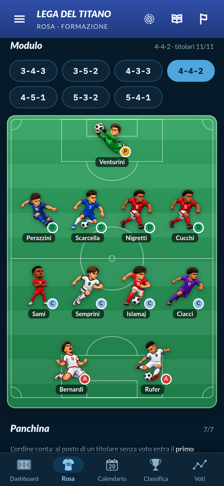

Si muove per primo il fendente (1,0 s, da sinistra-basso a destra-alto): SERIE A si spacca, lo schermo trema, sopra "FANTACALCIO?" diventa NON SOLO. La linea oro esce verso l'alto e diventa la sottolineatura della scena 2.
→ testimone · linea oro
SAMMARINESE
Prima "ARRIVA IL / FANTACALCIO" (3,0 s, 150px, linea oro sotto), poi cambio netto su "DEL CAMPIONATO / SAMMARINESE" (4,5 s, 112px: è la riga più larga), poi la pastiglia FANTATITANO (5,5 s). Il titolo si stringe e va via; la pastiglia sale sopra il telefono.
→ testimone · pastiglia in alto
I TUOI 11

Il telefono sale dal basso (6,0 s) con la pagina formazione vera dal titolo "Modulo" (nessuna data); tocco sul 4-4-2 a 7,0 s. Il telefono esce dal fondo: conta la parte alta dello schermo. Taglio netto dentro lo schermo.
→ taglio · dentro lo schermo
Dentro lo schermo al 170%: 8,0–9,0 s tocco sul +, elenco vero dei portieri, Venturini (tagli netti). Poi i posti si aprono uno ogni mezzo battito con un tick: Perazzini … Rufer (qui manca solo Rufer). Nomi leggibili, ~34px. Esce verso il telefono intero.
→ uscita dallo schermo · 170→100%

SALVATA
Tocco sul pulsante vero "CONFERMA FORMAZIONE · 11/11" (12,5 s, spinta al 108%): il telefono si scurisce e sopra entrano la spunta oro e FORMAZIONE / SALVATA. L'avviso dell'app con la giornata non si vede mai. Dal 14,5 s il telefono scende e rimpicciolisce.
→ testimone · la corona scende
La corona scende dall'angolo e cresce al centro (15,0–15,5 s); poi FANTATITANO, GIOCA GRATIS SU e la pastiglia oro. Fermo da 17,0 s: è la locandina finale. Sotto resta libero per il pulsante "Scopri di più".
fine · fotogramma fermoLe cuciture
- 01 → 02 testimone: la linea oro del taglio diventa la sottolineatura di FANTACALCIO.
- 02 → 03 testimone: il titolo va via, la pastiglia FANTATITANO sale e resta sopra il telefono che arriva.
- 03 → 04 taglio netto dentro lo schermo (170%).
- 04 → 05 si esce dallo schermo (170→100%) sul pulsante di conferma.
- 05 → 06 testimone: il telefono scende, la corona dell'angolo scende al centro e diventa il marchio.
Direzione unica: le cose nuove arrivano dal basso, le vecchie escono in alto. La corona piccola è il filo: c'è dal primo fotogramma e torna come marchio.
Token · Notte e oro
- Lato 900 corsivo maiuscolo: SERIE A 260px · titolo 150/112px · scritte 120px · FANTATITANO 146px · occhielli 96px · etichetta 54px · pastiglie 64px.
- Massimo 3 parole per riga, 2 righe; ogni riga entro 936px di larghezza.
- Divieti: niente interfaccia finta, niente foto, nessuna data o giornata, niente TITO; né presentazione né salvaschermo.